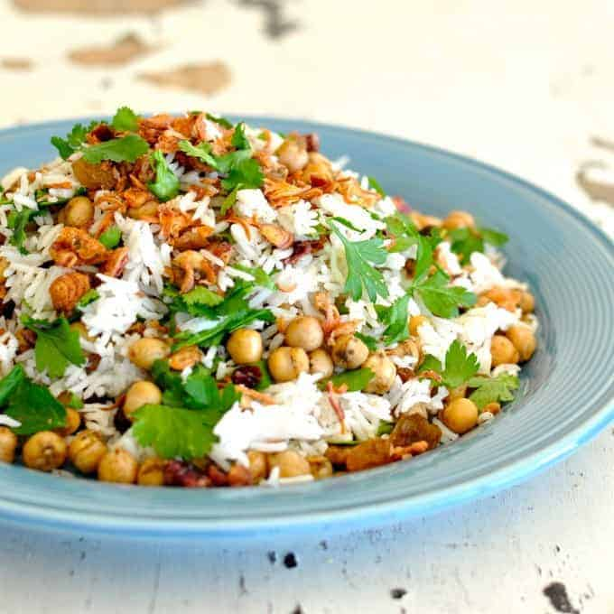

Chickpea Pilaf

Image Above: Photography and Food Styling by Nagi from RecipeTin Eats
Chickpea Pilaf is a middle eastern dish that is healthy and easy to prepare.
This recipe can be used to make a side dish or main.
Ingredients:
- 1 cup uncooked basmati rice (or long grain rice)
- 1 1/2 cups water
- 1/2 tsp salt
- 1 1/2 can of chickpeas
- 1/4 tsp salt
- 1 tsp cumin
- 1 tsp olive oil
- 1/4 cup parsley leaves
- 1/4 cup cilantro (coriander) leaves
- 1/2 cup fried shallots
Instructions
- Combine rice, water and 1/2 tsp salt in a saucepan, bring to boil, turn down then simmer for 8 to 10 minutes until the water is mostly absorbed. Remove from heat and let rest for 10 minutes - it will absorb the remaining water.
- While rice is cooking, combine chickpeas, 1/4 tsp salt and cumin into a bowl, toss to coat.
- Heat 1 tbsp olive oil in large pan over high heat, add the chick peas and shake the pan every now and then for 1 minute.
- After the rice has rested, combine with the chickpeas, parsley and coriander, add a grind of black pepper. Mix the spice throughout. Adjust seasoning if necessary.
- Lastly, toss through the crispy shallots. Serve warm or at room temperature.